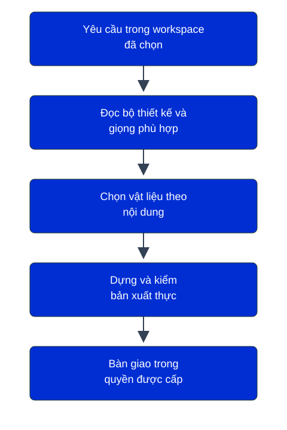

Tải đúng bản phát hành v2026.10.24-design-systems và archive được bàn giao; đối chiếu SHA-256 trước khi giải nén/chạy. Không dùng nhánh main trôi nổi để thay một bản đã ghim. Đọc manifest, checksums.sha256 và hướng dẫn; từ chối thiếu tệp, hash sai, đường dẫn thoát, liên kết, tên trùng hoặc tài sản không rõ quyền.
WORKSPACE là thư mục người dùng thực sự đang mở hoặc chỉ định trong Codex. Không suy ra từ shell tình cờ. Chỉ hỏi nơi lưu nếu chưa xác định được. Kiểm host, quy tắc, Python3.10+thư viện chuẩn hiện có, cơ chế skill và trùng tên; không tự cài Python, đổi quyền, khởi động lại hay cài toàn máy.
Trong thư mục gói đã kiểm, agent chạy installer/install_client_package.py với --target-root là đường dẫn workspace tuyệt đối và --preview. Bản xem trước liệt kê .agents/skills/dax; Voice chung được cung cấp riêng trong bản kết hợp và giữ nguyên; không thay router hoặc file khách. Xung đột khác mã dừng trước mọi ghi. Chỉ sau khi đúng quyền, chạy --apply --confirm. Cờ kỹ thuật không thay cổng duyệt riêng của máy đích.
Nếu cài lại đúng bản, giữ tệp giống mã; không tạo cây lồng nhau. Nếu có tệp khác nội dung, giữ nguyên và chuẩn bị phạm vi nâng cấp/bản cũ/khôi phục riêng trước khi thay. Sau gián đoạn, đọc trạng thái và biên nhận trước khi thử lại; khôi phục chỉ file mới do giao dịch tạo và vẫn đúng mã. Không dọn dữ liệu khách để chữa lỗi.
Mỗi skill có SKILL.md, quy tắc thực, nguồn HTML/PDF và script kiểm ngay trong thư mục của nó. Giải quyết đường dẫn theo SKILL.md, không theo cwd. Voice chung đi cùng HAHA được giữ nguyên; giọng thương hiệu theo VOICE.md riêng. Không cần OS, skill Design mẹ hoặc đường dẫn máy dựng. Phông, ảnh, biểu tượng và luật chỉ dùng trong quyền kèm gói; Arial lấy từ máy xem/sans-serif dự phòng, không phân phối font gốc.
Tạo mới các thư mục BRAND-Design-work/input,output,library/custom trong workspace khi cần; giữ mẫu nguồn bất biến và dữ liệu khách đang có. Thành phần mới có nguồn sửa được, bản xem, mục đích, quy tắc, phụ thuộc, quyền, phiên bản, kiểm và duyệt trước khi thêm chỉ mục. Không tự sửa baseline hoặc học lại giọng đã duyệt.
Sau kiểm đạt, hướng dẫn ngắn: nơi làm việc, cách gọi đã thử, một ví dụ, nơi đặt đầu vào/đầu ra và điểm còn chờ. Chi tiết theo từng packages/BRAND/SETUP.md. Kho công khai không cấp giấy phép mở cho thương hiệu; không tự xuất bản, mua hoặc gửi thay khách.
Mở source/skill/dax/SKILL.md. Đường vào HTML là source/skill/dax/assets/design-system/design-system.html; asset-manifest.json cùng thư mục chọn đúng nguồn quy tắc và bốn PDF. Gói riêng này cài thương hiệu DAX. VOICE.md của thương hiệu dùng độc lập; nhánh học giọng mới cần Voice chung trong packages/haha/source/skill/voice của bản kết hợp hoặc gói riêng đã ghim, không được giả định đã cài.
Bản ZIP kết hợp chọn nguồn Voice thực thi tại packages/haha/source/skill/voice, đúng 30 tệp nguyên bản. Kho Git giữ packages/voice và bản phát hành riêng nguyên byte; thư mục lịch sử của gói riêng không được nhân thêm vào ZIP mới.
Bản bàn giao được chọn: DAX-0.1.0-candidate-r23-client-20261024.zip thuộc release v2026.10.24-design-systems; phiên bản dữ liệu 0.1.0-candidate-r23. Dùng mã kiểm độc lập nhận cùng gói. Không lấy archive cùng số phiên bản dữ liệu của một đợt bàn giao cũ để thay bản này.
Lệnh installer/install_client_package.py chạy tại thư mục gốc ZIP riêng của thương hiệu; gói kết hợp dùng installer/install_design_systems.py tại thư mục gốc của nó. source/skill/dax là nguồn trong ZIP riêng. Sau khi cài, mở .agents/skills/dax/SKILL.md tại workspace đích; chạy .agents/skills/dax/scripts/inspect_dax.py để kiểm bản đã cài. Các đường assets/design-system trong quy tắc tính từ thư mục chứa SKILL.md.
